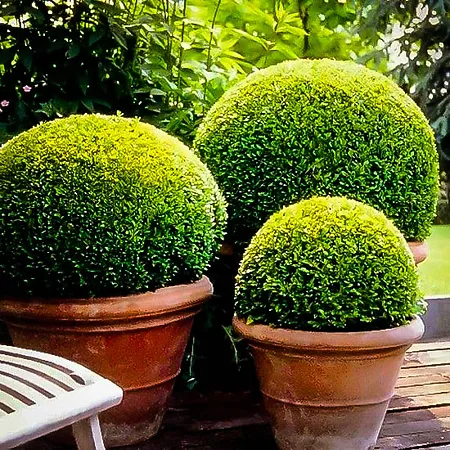
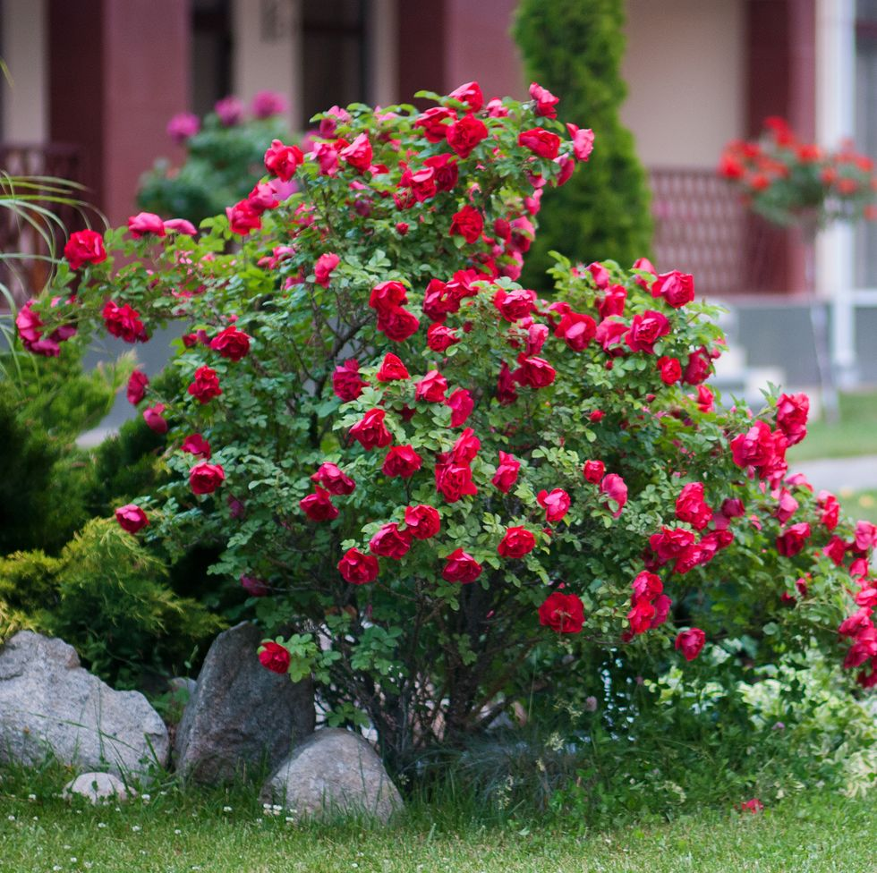
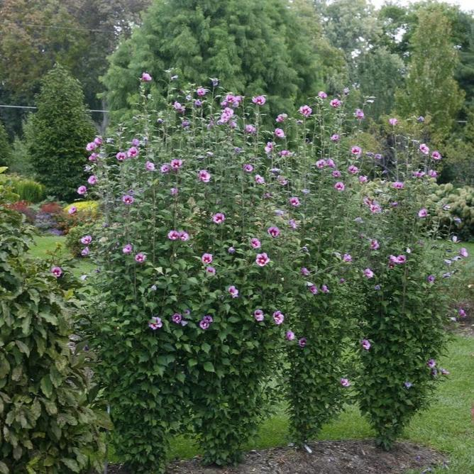

Nursery

A nursery is a place where plants are propagated and grown to a desired size.
In a word, a nursery is a centre of seedling production where seedlings are produced and taken care of until transplantation in the main field.
Mostly the plants concerned are for gardening, forestry, or conservation biology, rather than agriculture.
Order Now
Shrub Roses

Shrub roses come in a wide array of colors, from snowy white to deep purple.
Though the flowers aren't as showy as more traditional hybrid teas, shrub roses require far less maintenance and are more resilient.
Newer cultivars have been bred for exceptional disease resistance, hardiness, and a greater number of blooms.
Order Now
Shrubs vs Bushes

Have you ever wondered what the difference is between shrubs and bushes?
As far as horticulture (the art and practice of garden cultivation) is concerned, there is no exact definition of when a plant is a shrub or a bush.
Many people use both "shrubs" and "bushes" to describe the same plants. Are they wrong? Overall, it's really just a matter of personal preference and regional language.
Order Now